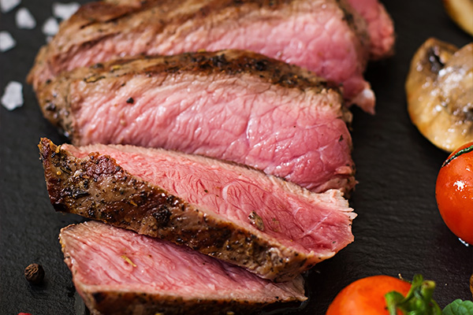

Além da Picanha: Novos Cortes Bovinos Ganham Espaço nas Grelhas
Publicado em 05 de Abril, 2025

A picanha reina soberana no churrasco brasileiro, mas uma nova onda de cortes bovinos, antes menos conhecidos ou até considerados de "segunda", vem ganhando destaque em açougues, restaurantes e, claro, nas grelhas caseiras. Com técnicas corretas de preparo e preços muitas vezes mais acessíveis, esses cortes oferecem **sabores intensos, texturas interessantes** e uma ótima oportunidade para variar o cardápio.
Impulsionados pela busca por novas experiências gastronômicas e pelo trabalho de chefs e açougueiros em valorizar o boi inteiro ("do focinho ao rabo"), esses cortes estão mostrando que há muita vida além dos tradicionais.
Conheça Alguns dos Novos Queridinhos:
Flat Iron Steak (Shoulder Steak ou Raquete)
Retirado da paleta do boi, especificamente do músculo *infraspinatus*. É o **segundo corte mais macio do boi**, perdendo apenas para o filé mignon, mas com um sabor muito mais pronunciado de carne. Possui um nervo central que geralmente é removido pelo açougueiro, resultando em dois steaks achatados. Ideal para grelhar rapidamente em fogo forte, servido mal passado ou ao ponto para mal, fatiado contra a fibra.
Denver Steak
Vem do acém, uma parte do dianteiro geralmente usada para cozidos ou moída. No entanto, o Denver Steak é retirado de um músculo específico do acém (*serratus ventralis*) que é surpreendentemente macio e com **ótimo marmoreio** (gordura entremeada). Tem sabor intenso e textura agradável. Deve ser grelhado em fogo forte até o ponto desejado (mal passado a ao ponto) e fatiado fino contra a fibra.
Bife do Vazio (Fraldinha ou Pacu)
Embora não seja exatamente "novo" para muitos churrasqueiros experientes, o Vazio (conhecido como *Bavette* na França ou *Flank Steak* em inglês, embora haja pequenas diferenças) ganhou muita popularidade. É um corte longo e achatado, com fibras musculares bem aparentes e sabor marcante. É mais saboroso quando marinado e grelhado rapidamente em fogo bem forte, servido mal passado ou ao ponto para mal, e **obrigatoriamente fatiado bem fino contra as fibras** para garantir a maciez.
Shoulder Steak (Miolo da Paleta)
Diferente do Flat Iron (que é *parte* da paleta), o Shoulder Steak ou Miolo da Paleta é outro corte do dianteiro com excelente relação custo-benefício. É macio, saboroso e versátil. Pode ser grelhado inteiro em fogo médio ou cortado em bifes mais grossos. Funciona bem mal passado ou ao ponto.
Short Rib (Costela Curta ou Assado de Tira)
Popularizado pelo churrasco americano e argentino, o Short Rib é um corte retirado da parte dianteira da costela, geralmente serrado transversalmente aos ossos (formato de "tira") ou em pedaços individuais com osso. Possui **osso, carne e gordura**, resultando em muito sabor. Ideal para cozimento mais lento na grelha (fogo médio/baixo) ou até mesmo no bafo/defumador para amaciar bem. Quando feito corretamente, fica extremamente suculento.
Por que Experimentar?
- Custo-Benefício: Muitos desses cortes ainda são mais baratos que os cortes "nobres" tradicionais.
- Sabor Intenso:** Cortes do dianteiro ou próximos aos ossos costumam ter um sabor mais pronunciado de carne.
- Novas Texturas:** Saia da rotina e experimente diferentes sensações ao mastigar.
- Valorização do Animal:** Utilizar cortes menos convencionais ajuda a valorizar o trabalho de pecuaristas e açougueiros e promove um consumo mais consciente.
Converse com seu açougueiro de confiança, peça por esses cortes e aventure-se a prepará-los na sua grelha. Você pode se surpreender com os resultados e descobrir novos favoritos para o seu churrasco!
Junte-se à Comunidade ChurrascoMania!
Siga-nos nas redes sociais e participe das discussões.